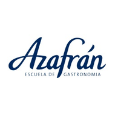
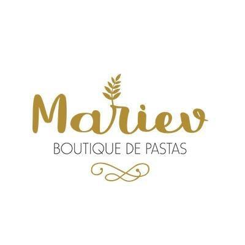

Estudios & Experiencia Laboral
Educación
Escuela Normal Superior José Figueroa Alcorta
2006 - 2012
Escuela Secundaria, Bell Ville, Cba.
Escuela secundaria con especialización en ciencias sociales
Azafrán: Escuela de Gastronomía
2014 - 2017
Tecnicatura superior en gastronomía
La Tecnicatura Superior en Gastronomía ofrece una formación de alta capacitación interdisciplinaria, brindando las herramientas y técnicas necesarias a través de programas, contenidos y dinámicas diseñados para que el alumno pueda adquirir los conocimientos y destrezas de forma idónea.
De esta manera, el alumno se familiariza con contenidos de bromatología, nutrición, diseño de menús, enología, servicio, organización de eventos, administración, gestión, costos, diseño y equipamiento de cocinas, además de los contenidos propiamente culinarios.
 Argentina Programa
Argentina Programa
2022 - Presente
Modalidad Online
Programa de formación de Full stack web developers jr
Experiencia Profesional
Azafrán: Escuela de Gastronomía
2014 - 2017
Córdoba, Argentina.
- Ayudante de Cocina.
- Prácticas de formación culinaria
 Mariev:Boutique de Pastas
2017 - Presente
Fabrica de Pastas, Bell Ville, CBA
- Chef
- Administración general
- Manejo de las Redes Sociales
- Atención al cliente